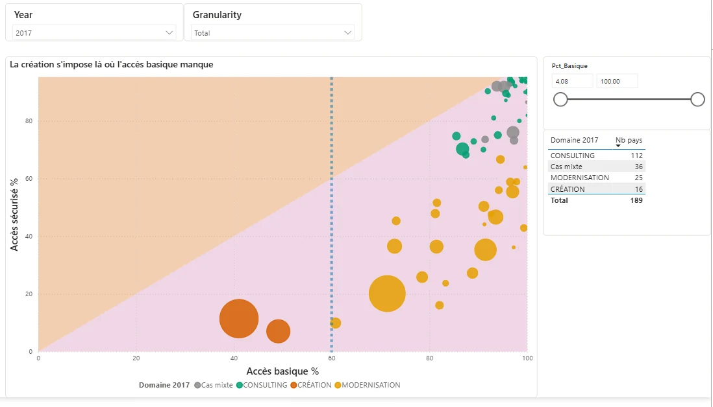
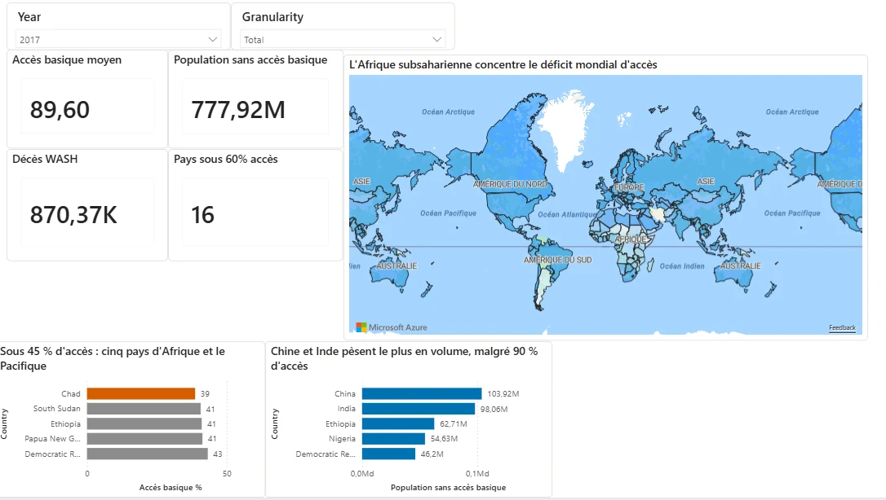

Projets
Un projet personnel que je mets à jour chaque mois, puis quatre projets réalisés pendant ma formation.
Observatoire du métagame Pokémon VGC (projet personnel)
Contexte. Smogon publie chaque mois les statistiques du jeu compétitif Pokémon, mais aucun site n'en garde l'historique. On ne peut donc pas suivre ce qui change d'un mois à l'autre.
Réalisation. Un pipeline Python qui récupère les fichiers chaque mois (près de 450 000 équipes en septembre 2026), les transforme en modèle en étoile et les archive sur GitHub. Il est couvert par 15 tests et s'exécute tout seul grâce à GitHub Actions. Les données alimentent un tableau de bord.
Résultat. On distingue les Pokémon simplement populaires de ceux que les meilleurs joueurs adoptent en premier. C'est la même question que comparer la part de marché d'un produit à son adoption par les clients les plus exigeants.

Accès mondial à l'eau potable
Contexte. Une ONG dispose de vingt ans de données OMS et FAO sur l'accès à l'eau et doit décider où concentrer ses moyens.
Réalisation. Un tableau de bord Power BI de quatre pages, avec un modèle en étoile, quatorze mesures DAX et un thème lisible par les personnes daltoniennes.
Résultat. Les zones prioritaires sont identifiées, et l'ONG peut arbitrer entre une couverture large et une intervention plus ciblée.


Étude de marché à l'international
Contexte. Un industriel de l'agroalimentaire veut exporter et doit choisir ses premiers pays cibles parmi 166.
Réalisation. Une analyse en composantes principales, une classification hiérarchique et un k-means, puis un score d'attractivité par pays.
Résultat. Une liste de quinze pays prioritaires, avec une pondération que l'équipe métier peut ajuster.
DATAImmo, pipeline de données immobilières
Contexte. Trois sources publiques sur l'immobilier, chacune dans un format différent.
Réalisation. Un pipeline d'ingestion et de transformation qui produit des tables normalisées, avec des contrôles d'intégrité, un dictionnaire de données et douze requêtes métier.
Résultat. Une base fiable, qu'on peut interroger sans retraitement manuel.
Pipeline analytique conforme au RGPD
Contexte. Une population d'apprenants est-elle représentative de la population française ?
Réalisation. Un pipeline dbt sur Snowflake qui calcule un indice de représentativité à partir des données INSEE, documenté et conforme au RGPD.
Résultat. Les écarts les plus importants sont mesurés, ce qui permet de mieux cibler le recrutement.
Également réalisés pendant la formation : une détection d'anomalies sur des mesures physiques (régression logistique et k plus proches voisins) et une analyse statistique de ventes (corrélations et tests d'hypothèses).
Expérience
Sept. 2024 à sept. 2026
Lyon
Orange, direction technique France
- Conception et alimentation d'une base de données multi-sources sous GCP et BigQuery, utilisée pour le pilotage des équipes métier.
- Développement et maintenance de tableaux de bord Power BI pour le suivi des indicateurs.
- Recueil des besoins et définition des indicateurs avec les équipes métier, en particulier l'harmonisation des définitions entre services.
2022 à 2023
Paris
Le Wagon
- Analyse de la rétention client d'une néo-banque et recommandations, avec SQL, Python et Power BI.
Oct. 2020 à janv. 2021
Paris
Douka Paris
- Segmentation des clients et prospects, ciblage et gestion des budgets Google Ads.
Compétences
- Données : SQL, dbt, Snowflake, BigQuery, GCP, Databricks, modélisation en étoile
- Analyse : Python (pandas, scikit-learn), statistiques, ACP, clustering
- Restitution : Power BI (DAX, Power Query), Looker Studio
- Méthode : Git, tests automatisés (pytest), GitHub Actions, documentation, RGPD
Documents de méthode
- Procédure pour créer un graphique d'analyse : choix du graphique, hiérarchie de lecture, contrôles avant diffusion.
- Kit de formation Power BI : un parcours de 45 minutes pour rendre un référent métier autonome sur ses indicateurs.
Formation
2024 à 2026
Titre RNCP niveau 6 Data Analyst, spécialisation BI
2022 à 2023
Bootcamp Data Analytics
2018 à 2022
Licence Économie et Gestion
Langues : français (langue maternelle), anglais professionnel, espagnol intermédiaire.
Contact
Je cherche un poste de data analyst en Île-de-France ou en télétravail.